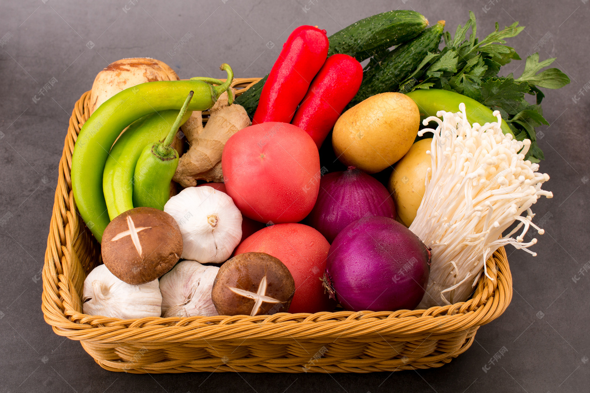
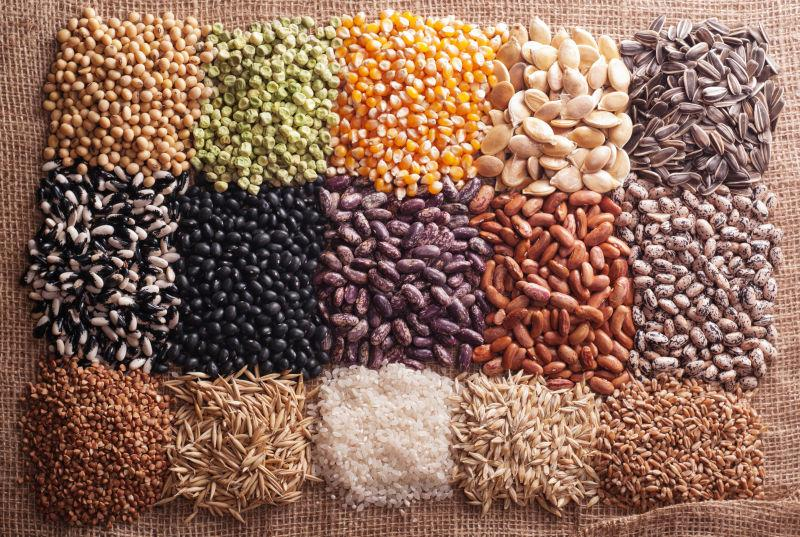
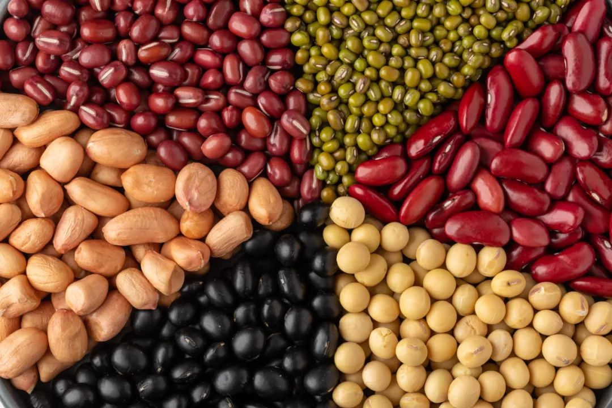
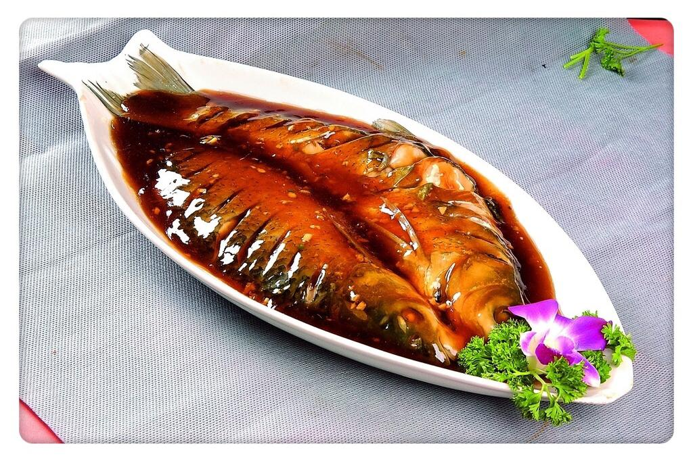
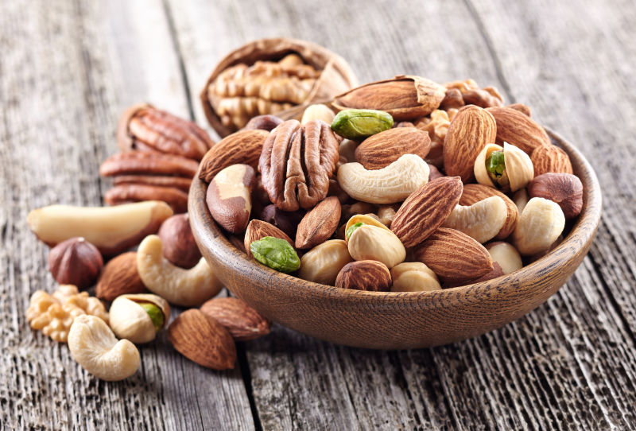

糖尿病患者饮食原则
糖尿病患者的饮食需要严格控制碳水化合物、脂肪和糖分的摄入，同时保证足够的膳食纤维和营养。以下是一些适合糖尿病患者的食物推荐。
推荐食物

蔬菜
如菠菜、西兰花、胡萝卜等，富含膳食纤维和维生素，有助于控制血糖。

全谷物
如燕麦、糙米、全麦面包等，富含膳食纤维和复合碳水化合物，消化吸收相对较慢，有助于稳定血糖。

豆类
如黑豆、红豆、绿豆等，富含蛋白质、膳食纤维和低聚糖，有助于控制血糖和血脂。

鱼类
如三文鱼、鳕鱼、金枪鱼等，富含优质蛋白质和不饱和脂肪酸，有助于降低心血管疾病的风险。

坚果
如杏仁、核桃、腰果等，富含蛋白质、健康脂肪和膳食纤维，但热量较高，需适量食用。
低脂乳制品
如牛奶、酸奶、奶酪等，富含蛋白质、钙和维生素 D，有助于维持骨骼健康。